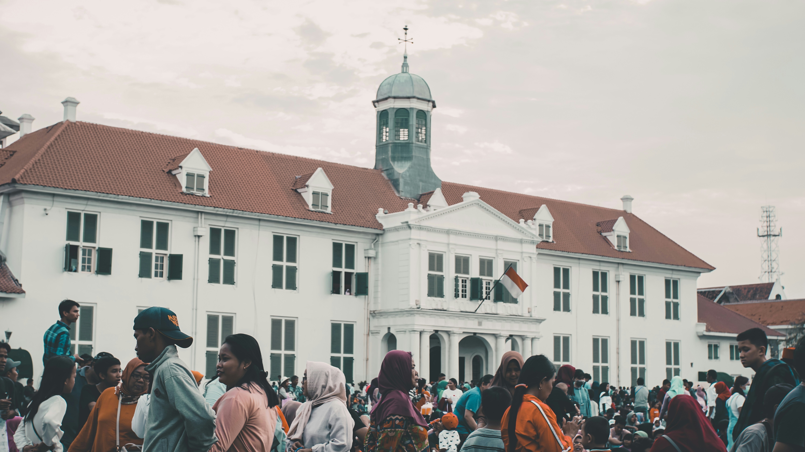
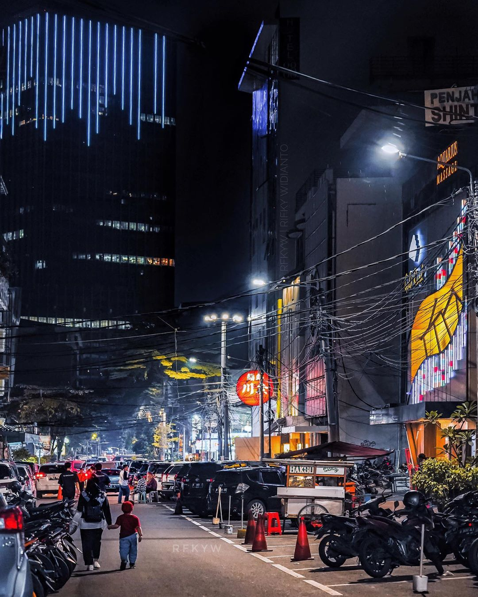

Tourist Places
The iconic landmarks of Jakarta.
Monumen Nasional (Monas)

Standing tall in the heart of Merdeka Square, the National Monument (Monas) is the most iconic symbol of Jakarta and Indonesia's struggle for independence. This towering obelisk, topped with a flame covered in gold foil, was built to commemorate the nation's struggle. The base houses a museum detailing Indonesia's rich history.
Kota Tua (Old Town)
A stark contrast to the modern skyscrapers, Kota Tua is the historical heart of Jakarta. This area preserves colonial-era buildings from the Dutch rule, centered around Fatahillah Square. The buildings now house several museums, including the Jakarta History Museum, creating a popular cultural hub for tourists and locals alike.
A Dynamic Hub: Blok M
Once a traditional shopping district, Blok M has evolved into a vibrant urban hub. It's a popular destination for its mix of modern shopping malls, bustling street markets, and a lively atmosphere. The area is also home to new creative spaces like M Bloc Space, which hosts live music, art exhibitions, and unique culinary spots.
The City's Vibe

Jakarta's defining characteristic is its dynamic energy. It's a city of sharp contrasts: high-end shopping malls stand next to bustling street markets, and modern skyscrapers overlook traditional street food vendors. The notorious traffic ("macet") is an undeniable part of daily life, but it’s also a sign of the city's constant movement and relentless pace. It's a melting pot of cultures from across the Indonesian archipelago, which is reflected in its incredibly diverse and flavorful food scene, making it a true culinary paradise.